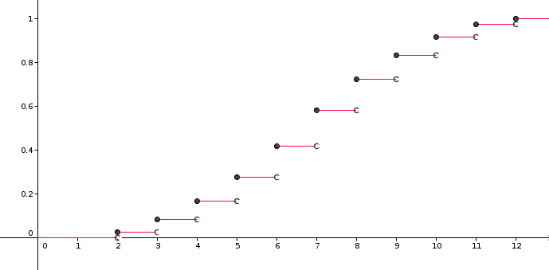
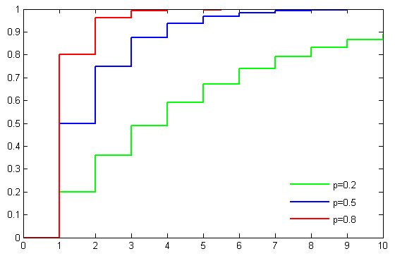
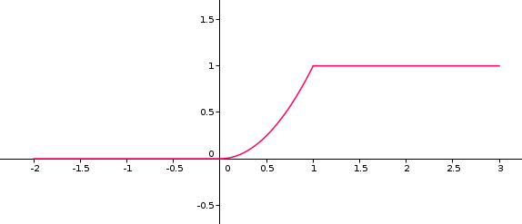

| Choisissez votre langue ! | Choose your language ! |
Définition
Nous vous conseillons, si vous ne l'avez déjà fait, de voir en préambule du cours de statistique concernant le partage d'une population en classes.Definition
We advise you, if you have not already done so, to see as a preamble of the statistics course concerning the division of a population into classes.F(x)=P(X ≤ x)
F(x)=P(X ≤ x)
Propriétés
Properties
P( x1 < X ≤ x2) ≥ 0.
P( x1 < X ≤ x2) ≥ 0.
Pour tout i soit Pi l'évènement x < X ≤ xi.
Alors P(Pi)=F(xi)-F(x).
On a Pi+1 ⊆ Pi ∀ i.
En outre \( \displaystyle \bigcap\limits_{i}P_{i} = Ø \)
La démonstration résulte donc de (axiome de continuité).
For all i let Pi be the event x < X ≤ xi.
Then P(Pi)=F(xi)-F(x).
We have Pi+1 ⊆ Pi ∀ i.
Furthermore \( \displaystyle \bigcap\limits_{i}P_{i} = Ø \)
The demonstration therefore results from (axiom of continuity).
En effet si F présente un saut en x, pour raison de , on peut toujours trouver un rationnel dans l'intervalle ]F(x), F(x+)[. On fabrique ainsi une application de l'ensemble des discontinuités de F dans l'ensemble des rationnels, car si y > x les deux intervalles ]F(x), F(x+)[ et ]F(y), F(y+)[ sont .
Indeed if F presents a jump at x for reason of , we can always find a rational in the interval ]F(x), F(x+)[. We thus create an mapping of the set of discontinuities of F in the set of rationals, because if y > x the two intervals ]F(x), F(x+)[ and ]F(y), F(y+)[ are .
- F est croissante
- F est partout continue à droite
- \( \displaystyle {\lim\limits_{x\rightarrow{- \infty}}F(x)} = 0 \)
- \( \displaystyle {\lim\limits_{x\rightarrow{+ \infty}}F(x)} = 1 \)
- F is increasing
- F is everywhere right-continuous
- \( \displaystyle {\lim\limits_{x\rightarrow{-\infty}}F(x)} = 0 \)
- \( \displaystyle {\lim\limits_{x\rightarrow{+ \infty}}F(x)} = 1 \)
Cas des univers finis
La fonction de répartition s'obtient par cumul de la loi de répartition.Voici ce que cela donne dans le cas de l'exemple de la (somme des deux dés).
Case of finite universes
As its name indicates, the cumulative distribution function is obtained by cumulation of the distribution law.Here's what it looks like in the case of the example of (sum of the two dice).
| -∞<x<2 | F(x)=0 |
| 2≤x<3 | F(x)=1/36 |
| 3≤x<4 | F(x)=3/36 |
| 4≤x<5 | F(x)=6/36 |
| 5≤x<6 | F(x)=10/36 |
| 6≤x<7 | F(x)=15/36 |
| 7≤x<8 | F(x)=21/36 |
| 8≤x<9 | F(x)=26/36 |
| 9≤x<10 | F(x)=30/36 |
| 10≤x<11 | F(x)=33/36 |
| 11≤x<12 | F(x)=35/36 |
| 12≤x<+∞ | F(x)=1 |

Cas des univers dénombrables
Considérons la de paramètre p.Pour cette loi l'univers des possibles est {1,2, ...., n, ...}=ℕ* et \( \displaystyle P\left( \left\{ i \right\} \right) = pq^{i - 1} \) où q=1-p
Posant X(n)=n, nous obtenons ainsi une variable aléatoire.
Soit F la fonction de répartition de X.
\( \displaystyle F(n) = p{\sum\limits_{i = 1}^{i < n}q^{i - 1}=p{\sum\limits_{i=0}^{n - 2}q^{i}}=1 - q^{n - 1}} \)
En outre F est constante sur chaque intervalle ]n,n+1[.Case of countable spaces
Consider the of parameter p.For this law the universe of possibilities is {1,2, ...., n, ...}=ℕ* and \( \displaystyle P\left( \left\{ i \right\} \right) = pq^{i - 1} \) where q=1-p
Setting X(n)=n, we thus obtain a random variable.
Let F be the distribution function of X.
\( \displaystyle F(n) = p{\sum\limits_{i = 1}^{i < n}q^{i - 1}=p{\sum\limits_{i=0}^{n - 2}q ^{i}}=1 - q^{n - 1}} \)
In addition F is constant on each interval ]n,n+1[.

Image wikipédia
Cas des univers de cardinal au moins continu
Un exemple simple
Prenons un tir aléatoire uniforme dans un disque de rayon R.Ainsi l'univers des possibles se confond avec les couples ω=(u,v) tels que u²+v²≤1.
Soit X la variable aléatoire X(ω)=√(u²+v²).
Alors si F est la fonction de répartition de X on a F(x)=P(u²+v²≤x²).
Cet évènement correspond à :
- L'évènement impossible si x<0
- Au cercle de centre O(0,0) et de rayon x, si x <R
- L'évènement certain si x≥R
- 0 si x<0
- x²/R² si x <R
- 1 si x≥R
Case of spaces with cardinalities equal or greater than continuous (ℝ)
A simple example
Consider a uniform random shot in a disk of radius R.Thus the space of possibilities corresponds to the pairs ω=(u,v) such that u²+v²≤1.
Let X be the random variable X(ω)=√(u²+v²).
So if F is the distribution function of X we have F(x)=P(u²+v²≤x²).
This event corresponds to:
- The impossible event if x<0
- To the circle with center O(0,0) and radius x, if x <R
- The certain event if x≥R
- 0 if x<0
- x²/R² if x <R
- 1 if x≥R


Variables aléatoires absolument continues
Bien que cette définition, dans le cadre de la théorie de l'intégration de Lebesgue (cadre idéal pour la présentation du calcul des probabilités), soit un peu plus complexe, nous adopterons la version simplifiée suivante :Absolutely continuous random variables
Although this definition, within the framework of Lebesgue's integration theory (ideal framework for the presentation of the calculation of probabilities), is a little more complex, we will adopt the following simplified version:\( \displaystyle F(x) = {\int_{- \infty}^{x}f(u){du}} \)
f s'appelle alors la 'densité' de F.\( \displaystyle F(x) = {\int_{- \infty}^{x}f(u){du}} \)
f is then called the 'density' of F.Dans le cadre de ce cours, pour les univers non dénombrables, nous ne considérerons en pratique que le cas des v.a. à densité.
Dans ce cas on a la formule :
As part of this course, for non-countable universes, we will only consider in practice the case of r.v. with densities.
In this case we have the formula:
Répartition uniforme
Uniform distribution
\( \displaystyle F(x) = \left\{ \begin{matrix} {0\ {si}\ x < a} \\ {\frac{x - a}{b - a}\ {si}\ x \in \left\lbrack {a,b} \right\rbrack} \\ {1\ {si}\ x> b} \end{matrix} \right. \)
\( \displaystyle F(x) = \left\{ \begin{matrix} {0\ {si}\ x < a} \\ {\frac{x - a}{b - a}\ {si}\ x \in \left\lbrack {a,b} \right\rbrack} \\ {1\ {si}\ x> b} \end{matrix} \right. \)
Le théorème de la réciproque
Ce théorème affirme que :The converse theorem
This theorem states that :La fonction X est donnée par :
\( \displaystyle X(\omega) = {Inf}\left\{ x \in \mathbb{R} \mid F(x) \geq \omega \right\} \)
Si F est une bijection bicontinue d'un intervalle I sur [0,1] X est tout simplement la réciproque de F.The function X is given by :
\( \displaystyle X(\omega) = {Inf}\left\{ x \in \mathbb{R} \mid F(x) \geq \omega \right\} \)
If F is a bicontinuous bijection of an interval I on [0,1] X is simply the inverse of F.|
Création Gilles Dubois - licence CC-BY-SA
Created by Gilles Dubois - licence CC-BY-SA
|
Septembre 2023
September 2023
|
Version mobile Jquery
Mobile Jquery version
|
|